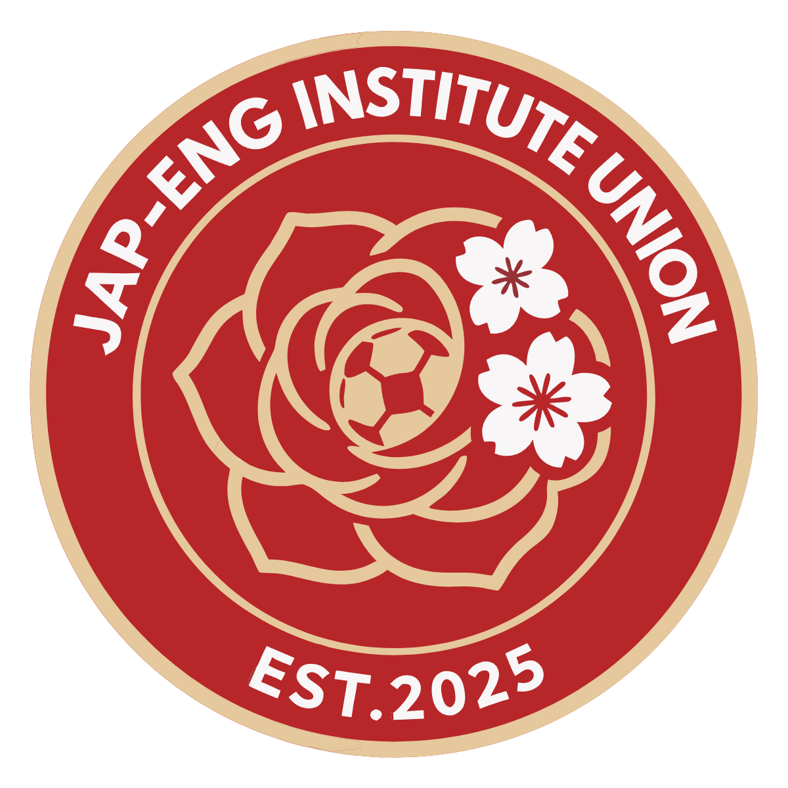
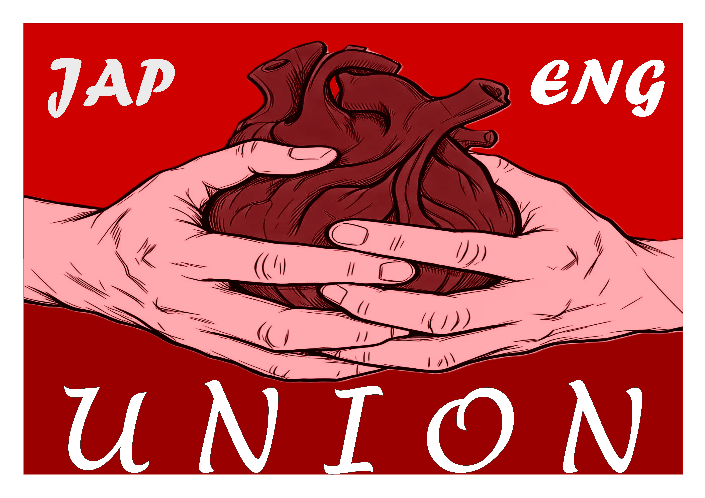

日英联盟，或称日英联、日英联队、JEUNION。全称为大连外国语大学日本语学院和英语学院足球队联盟。球队创立于2025年，由大连外国语大学日本语学院男足与英语学院男足合并组建。球队目前征战大连外国语大学校内联赛，但我们始终坚信未来不止于此。

该队徽由日英联盟队员裴东升设计。圆形徽章融合玫瑰、樱花与足球元素。玫瑰代表英语学院，同时象征坚韧与热血，樱花代表日本语学院，同时象征着联结与包容，中心足球为本，代表联盟对足球的热爱。配色红底配米金镶边，EST.2025代表球队诞生年份。JAP‑ENG INSTITUTE UNION，日英联盟，因足球相聚。

日英联盟的主色调是红色。红色是我们血液的颜色，我们每个人都流淌着红色的血。日英联盟注重忠诚、团结与理想，忠诚是我们的战前口号，这一传统源自日本语学院男足。团结是我们强大的武器，团结互助是我们的信条，联盟内的每个人都应当亲如兄弟。理想是我们赖以生存的根基，也是日英联盟不同于大连外国语大学其他男子足球队的特点。日英联盟是黑夜中的守望者，是特权的掘墓人。平等与进步是日英联盟永远的价值观，日英联盟永远反对特权，永远抵制任何试图滥用规则谋取私利的卑鄙行径。从根本上讲，日英联盟属于每一个联盟内的成员，每一个成员也会让联盟更加闪亮。
在日英联盟正式成立之前，日本语学院和英语学院曾长期以联队形式参加大连外国语大学校内足球赛事。历史上，两支球队还曾与俄语学院、高级翻译学院、商学院组成过联队，那一时期，学院之间的联合是复杂而又多变的。在2022年下半年，日本语学院和英语学院组成的联队夺得了九人制冠军。2023年上半年，这支老日英联队夺得了十一人制赛事季军。2023年下半年，为了进一步增强球队实力，老日英联队和俄语学院男足组成联盟，时任队长龚子轩和其他队员将这支球队命名为“花园宝宝”，球队也在那一学期拿到九人制冠军。但在2024年初，由于大外足协政策原因，原先的“花园宝宝”被迫拆分，各个学院不得不独自征战大外足球赛事。拆分后，日本语学院男足陷入了最困难的处境，当时球队总人数不足11人，在报名截止前最后一刻才强行拼凑出13人参加当学期十一人制比赛，尽管如此，球队凭借顽强的毅力，以及龚子轩、阿卜杜、李俊杰、鲁克曼、李明远等球员的出色发挥，最终夺得季军。而英语学院在队长郑明洙的带领下冲入淘汰赛，但最终不敌软件学院二队被淘汰，副队长江智权也在那场比赛中遭遇重伤。2024年下半年，日本语学院抽调以龚子轩、鲁克曼等主力球员与俄语学院和商学院组成日俄商联队，而其余球员则代表日本语学院单独出战，由孟维一担任队长。英语学院依旧独自征战大外足球赛事，但日、英两队均未能得到理想结果，日俄商也最终倒在季军赛中。
2025年上半年，出于球队情况和历史传统考虑，日本语学院男足和英语学院男足在十一人制赛事开始前再度联合，组成了今天的日英联盟。由于时间原因，日英联盟在该学期比赛中采用代表日本语学院的蓝色球衣，队徽则暂时使用院徽。两院延续多年的联队传统，在经历单独作战的艰难赛季之后，重新汇聚力量，正式组建日英联盟，开启全新的历程。
联盟成立后，迅速整合两院球员资源，由孟维一、阿音共同担任队长。分出一队和二队继续征战校内联赛。球队在磨合之中寻找默契，在正式比赛中迎接各类挑战，继续延续两院对于足球的热爱，向着共同目标前进。这一年，由于胸前赞助商的“彩虹小猫”字样，球队也被称为彩虹小猫。。在2025年上半年，日英联盟一队一度势如破竹，并凭借鲁克曼和董虹良的进球，以2：0的比分战胜了软件学院，赢下了第一场德比大战。然而由于球队刚刚组建，缺乏打磨，且遭遇伤病潮，球队最终输给汉学院，未能进入四强。休赛期，日英联盟经投票将球队主色调定为红色，并由裴东升设计了初代队徽。在2025年下半年，大外足协将赛制更改为二级联赛制。日英联盟在揭幕战中迎来德比，最终双方0:0战平，之后球队势如破竹，杀入一级联赛四强。半决赛中，日英联盟在常规时间1：1战平汉学院，但最终在点球大战中失利。随后的季军赛中，为抗议大外足协的种种不合理安排，日英联盟与欧洲联队打出10：10的比分，最终在点球大战中日英联盟败给欧洲联队。2026年上半年，日英联盟在赛季初期遭遇开局两轮不胜。但在接下来的德比战中，日英联盟凭借童蔚启的进球以及阿音、石林炜和门将周子衿的出色发挥，以1：0击败软件学院男足。但该学期的赛事最终因为两支球队的多次激烈冲突而中断。
双方矛盾最早起于2024年下半年，由于日本语学院队长兼裁判部成员孟维一在裁判部内部讨论中，反对软件学院男足在战平国商联队后要求更改比分，因此遭到软件学院男足球员围堵，日本语学院男足与软件学院男足的关系急速恶化。在日英联盟成立后，双方因训练场地纠纷等问题发生过数次冲突，从此互视为德比对手。2025年上半年联赛，日英联盟2：0战胜软件学院的比赛中，日英联盟球员董虹良与软件学院球员相撞，在这一过程中，日英联盟在第一时间无偿贡献医疗用品，并全程陪护，最终经检查确认软件学院队员并无大碍，而日英联盟队员董虹良遭遇小腿肌肉撕裂。事后软件学院队员却公然违背赛前承诺书内容，要求日英联盟球员董虹良全额赔偿检查费用，而大外足协也选择偏袒软件学院队员，要求董虹良赔偿70%的检查费用。日英联盟为缓解双方关系，予以人道主义援助，支付了检查费用的30%。但日英联盟的人道主义援助却莫名引发诸多软件学院队员的不满，他们认为日英联盟有能力却不愿支付全额费用是不合理的。这一事件再度激化了双方矛盾。在随后的赛事中，日英联盟六名队员以观众身份于看台上高喊“干死软件”，因此遭到大外足协长期禁赛和严厉处罚。但在下一学期开始后，这一处罚被足协撤销。2025年下半年，在软件学院男足被教职工队淘汰后，以“教职工不希望参加一级联赛淘汰赛”为由，要求递补晋级。这一行为遭到了其他球队的集体抵制，日英联盟立即同欧洲联队、国商联队、亚韩联队、汉学院队向足协抗议，最终大外足协修改赛制，设置复活赛，软件学院男足最终凭借复活赛资格进入决赛并夺冠。在这一过程中，由于复活赛以及比赛过程中的诸多严重判罚问题，日英联盟领队兼队长孟维一向大外足协发起抗议，遭到大外足协禁赛处罚，这也严重影响了日英联队的比赛状态。由于时任足协主席同时为软件学院男足队员，这一矛盾也被延伸到两支球队当中。随后，由于增加复活赛，比赛赛程大幅延长，日英联盟和欧洲联队的季军赛被安排在十二月初，两支球队不得不在冰天雪地中完成比赛。为抗议足协诸多不合理安排，日英联盟和欧洲联队打出10：10的比分，足协也因此不将比赛结果纳入统计中。2026年上半年是日英联盟有史以来遭受最多不公的一个赛季。在与软件学院男足的德比战前，软件学院男足通过特殊手段违规补报了一名外籍球员。日英联盟立即和欧洲联队、亚韩汉联队一起向足协发起抗议，但足协主席团对此的回应为“无理取闹”。在德比战中，日英联盟观众席遭到了诸多限制，而软件学院男足的替补席违规却并未被足协追究。德比战赛中，日英联盟队员石林炜和软件学院补报的外籍球员发生了口角，日英联盟队员石林炜因此遭到禁赛处罚，而对方未遭到任何处分。在比赛后，大外足协的战报中出现严重偏向软件学院的标题和内容，这激起了多支球队队员的不满，日英联盟、欧洲联队、亚韩汉联队的一些队员立即在战报评论区抗议大外足协和软件学院男足，软件学院男足队员随即在评论区回击，随后双方爆发大规模网络冲突。在冲突爆发后第二天，软件学院男足多达二十名队员围堵日英联盟和欧洲联队球员，将冲突进一步激化。而大外足协判定日英联盟在此次事件中全责，对日英联盟进行处罚并将联赛停摆一周。而在日英联盟新生队与软件学院男足的比赛赛后，软件学院男足违规补报的外籍球员来到日英联盟替补席区域，对日英联盟队员进行辱骂，双方发生口角冲突，随后软件学院男足几名队员对日英联盟队员进行推搡、殴打，由于事态严重，该学期联赛彻底中断。
2026-27赛季，日英联盟球衣胸前赞助为救赎Salvation鸡尾酒吧。救赎Salvation鸡尾酒吧位于大连旅顺口区海鲜街258-12号，自2025年9月以来一直作为日英联盟的赞助商，为日英联盟发展作出了重要贡献。球衣背后赞助为春日町日式拉面，春日町位于位于大连旅顺口区海鲜街100号，自2025年1月开始赞助日英联盟，是日英联盟的重要合作伙伴。肩部赞助为中国联通大外营业厅，自2025年1月起，联通大外营业厅就有职工人员以教职工身份效力于日英联盟。2026年9月，联通大外营业厅正式成为日英联盟的球衣赞助商。
日英联盟一直积极鼓励、支持大外校园女足事业发展。日英联盟始终认为，推广足球和发扬足球文化是联盟的义务，而支持女足事业则是推广足球和发扬足球文化的重要一环，哪怕这是“在沙漠里种花”。日韩女足解散后，日英联盟立即帮助日本语学院女足同大外女足豪门英商女足完成合并，这也是英商日女足联盟的来历。随后，日英联盟与英商日女足展开了深度合作，实现了训练器材共用和赞助商共享。日英联盟还力所能及地协助英商日女足完成招新工作。在日英联盟和各支女足球队的推动下，大外女足赛事于2026年正式恢复。对于日英联盟来说，英商日女足并非是扶持的对象，而是天然的朋友。日英联盟与英商日女足有着共同的初心和使命：让更多人享受足球的乐趣，让大外足球变得更好。英商日女足也一直在力所能及地帮助日英联盟，例如，英商日女足的荘旖乔曾担任日英联盟的助理教练，并在日英联盟2026年上半年的德比战中发挥了关键作用。